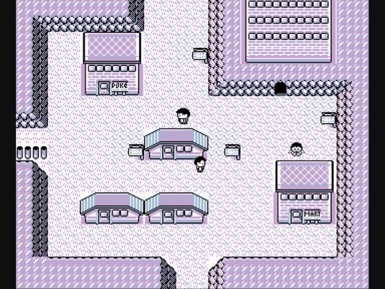
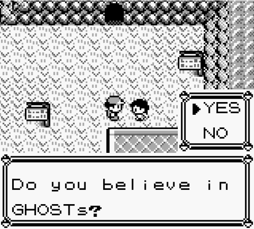

Lavender Town
Lavender Town is a location which could be accessed in the game. It is designed to be spooky and resembled an isolated rural area with high pitched background music. Its landmark building was a gigantic graveyard, which houses many dead pokemon and ghosts were haunting the surrounding area.

Lavender Town Syndrome
In 1996, when the game first released, a major suicidal and illness of children of young ages occured. Rumors say that these suicides and illness only occurred after the children playing the game reached Lavender Town, listening the theme music that had extremely high frequencies after a period of time. The studies showed that only children and young teens can hear, since their ears are more sensitive.
Due to the Lavender Tone, at least two-hundred children supposedly committed suicide, and many more developed illnesses and afflictions. The children who committed suicide usually did so by hanging or jumping from heights. Those who did not acted irrationally complained of severe headaches, nose bleeds, nausea, anger, or distress after listening to Lavender Town's theme. It is lately known as the 'Lavender Town Syndrome'.
Although Lavender Town now sounds differently depending on the game, this mass hysteria was caused by the first Pokémon game released. After the Lavender Tone incident, the programmers had fixed Lavender Town's theme music to be at a lower frequency, and since children were no longer affected by it.
Though that being said, the information later proved to be FALSE, merely caused by a documentary whose an anonymous user uploaded detailing how the music caused this incident upon its released. The story was spiced up with additional details by other users on the internet causing the event to become viral over mouth. Due to its popularity, it has became an urban legend ever since.